← 返回阅读库 · 原论文目录
论文讲解阅读文档 · 论文精读 · v230
为啥AI很难处理数量问题？
视频时长 00:07:26；讲解文字 2,410 字符；提取讲解画面 74 张。按视频原顺序阅读，每段文字保留时间戳。
文字来自整段视频的自动语音转写，按自然停顿分段，并与 PPT / 论文页面 / 演示画面对齐。未将讲解压缩为摘要；术语、数字和口述公式请结合画面及原论文核对。 阅读稿已校正规范部分明确术语误识别；原始逐字稿和每处修改记录另行保留。
讲解画面为源视频截图（640×360），不是可编辑 PPT 文件。全片按每秒 2 帧扫描内容变化，逐步展开页保留；连续动画保留代表画面。清晰度受源视频限制。
下载完整资料包 · 含离线 HTML、PDF、Word、全部 PPT 画面和字幕。
原论文与材料
Vision Language Models are Biased · 下载完整 PDF（86 页）
按时间阅读
00:00:00–00:00:01 · 画面 001
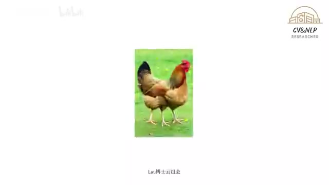
00:00:00–00:00:01 · 画面 001想象一下当你看到一只三条腿的鸡会立刻说出三条腿对吗？但也还不当研究者给 VLMS 看这张三条腿的鸡的图片时 Gemini 2.5 Pro 的回答是两条 Sonnet 3.7 也回答两条五款的模型全军覆没更离谱的是阿迪达斯的 Logo 的案例当 Logo 被修改为四条纹以后几乎所有的 VLMS 都坚持回答三条
00:00:01–00:00:02 · 画面 002
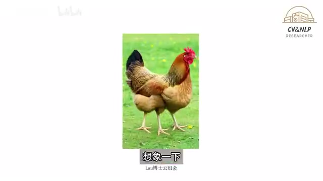
00:00:01–00:00:02 · 画面 00200:00:02–00:00:03 · 画面 003
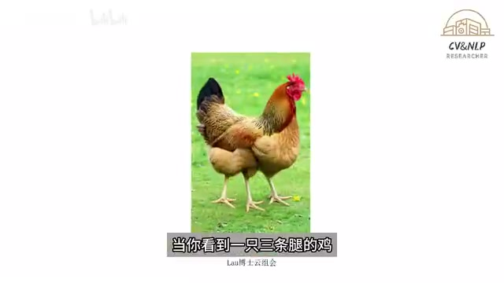
00:00:02–00:00:03 · 画面 00300:00:03–00:00:04 · 画面 004
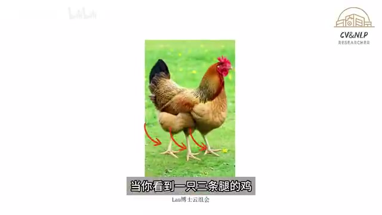
00:00:03–00:00:04 · 画面 00400:00:04–00:00:07 · 画面 005
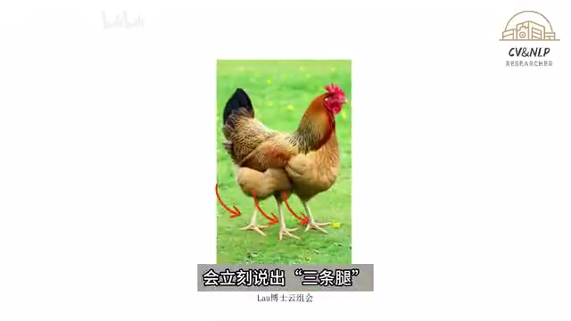
00:00:04–00:00:07 · 画面 00500:00:07–00:00:09 · 画面 006
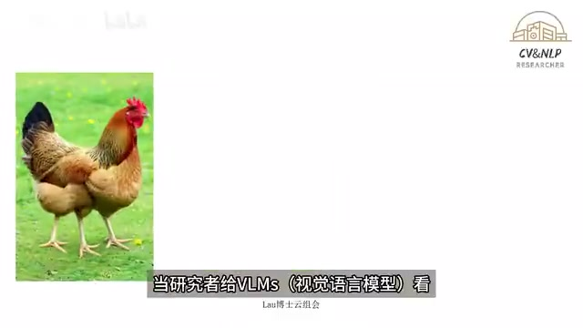
00:00:07–00:00:09 · 画面 00600:00:09–00:00:11 · 画面 007
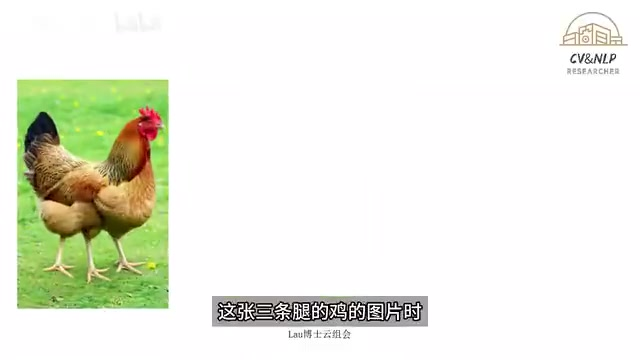
00:00:09–00:00:11 · 画面 00700:00:11–00:00:14 · 画面 008
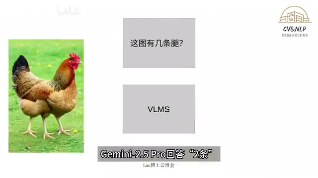
00:00:11–00:00:14 · 画面 00800:00:14–00:00:15 · 画面 009
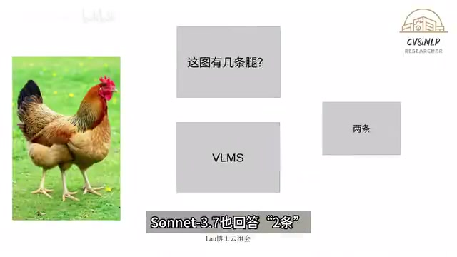
00:00:14–00:00:15 · 画面 00900:00:15–00:00:17 · 画面 010
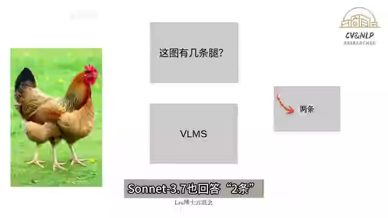
00:00:15–00:00:17 · 画面 01000:00:17–00:00:19 · 画面 011
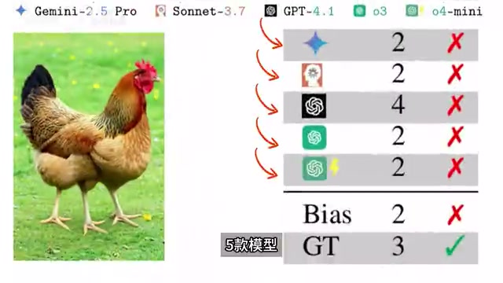
00:00:17–00:00:19 · 画面 01100:00:19–00:00:23 · 画面 012
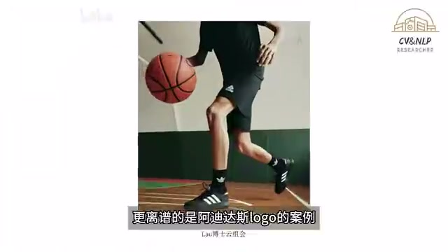
00:00:19–00:00:23 · 画面 01200:00:23–00:00:24 · 画面 013
00:00:23–00:00:24 · 画面 01300:00:24–00:00:28 · 画面 014
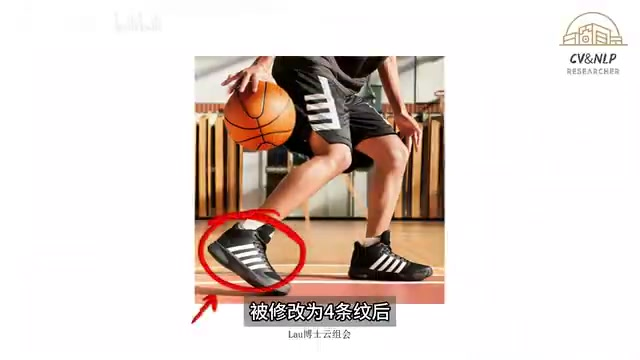
00:00:24–00:00:28 · 画面 01400:00:28–00:00:32 · 画面 015
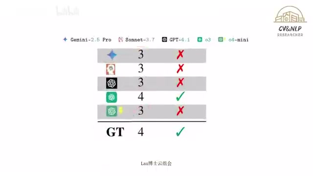
00:00:28–00:00:32 · 画面 015他们不是没看到第四条，而是 Adidas 等于三条纹的记忆太深了，直接忽略了图像的事实。他们在原始的图像上表现非常完美，准确率达到了 100%
00:00:32–00:00:36 · 画面 016
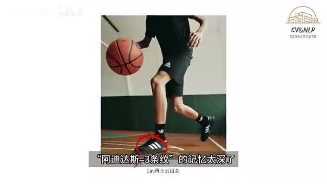
00:00:32–00:00:36 · 画面 01600:00:36–00:00:37 · 画面 017
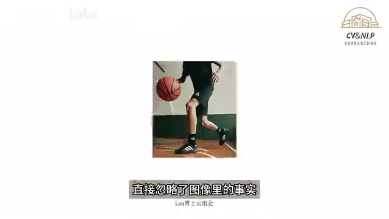
00:00:36–00:00:37 · 画面 01700:00:37–00:00:41 · 画面 018
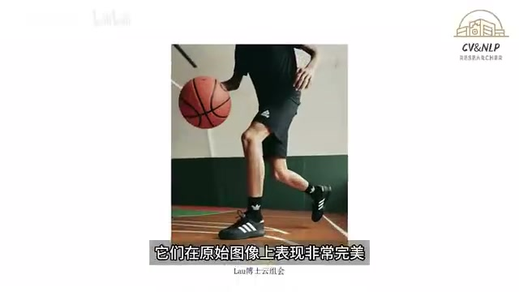
00:00:37–00:00:41 · 画面 01800:00:41–00:00:45 · 画面 019
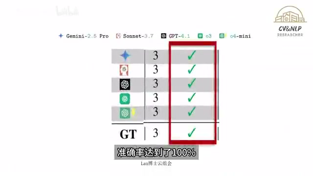
00:00:41–00:00:45 · 画面 019但对于细微修改的反事实图像却放着幼儿园的小朋友都不会犯的错。这个问题最先是被飞天闪客在他的视频里所提到，视频发布不到一周就已经有 400 万的浏览。随后 WhynotTV 的机器人博士泰然和计算机视觉大佬赛宁也发表了类似的观点，指出以语言模型为中心的多模态架构是导致这类错误的根源
00:00:45–00:00:49 · 画面 020
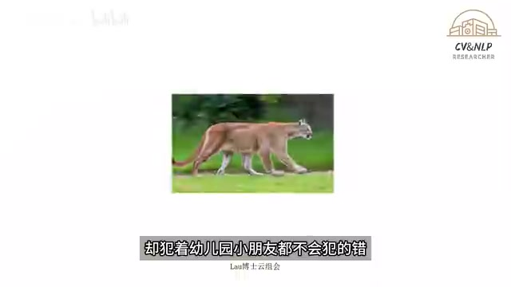
00:00:45–00:00:49 · 画面 02000:00:49–00:00:52 · 画面 021
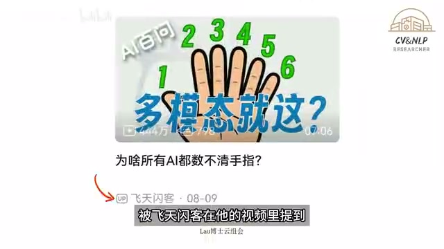
00:00:49–00:00:52 · 画面 02100:00:52–00:00:56 · 画面 022
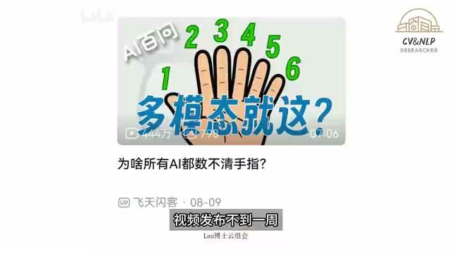
00:00:52–00:00:56 · 画面 02200:00:56–00:00:57 · 画面 023
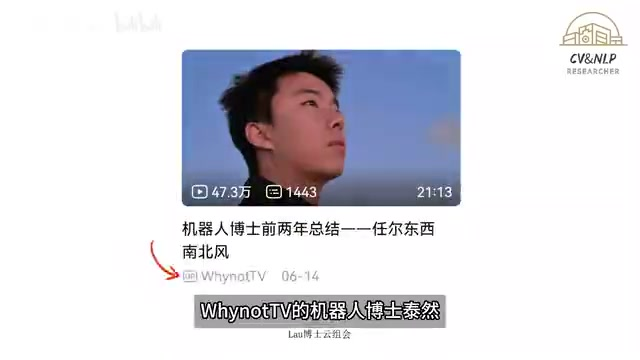
00:00:56–00:00:57 · 画面 02300:00:57–00:00:59 · 画面 024
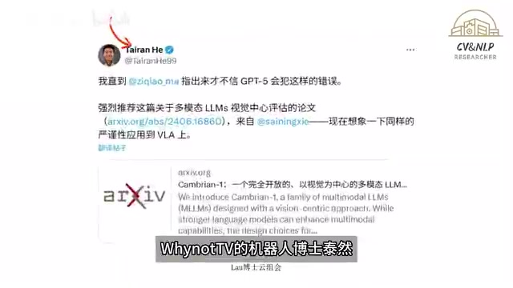
00:00:57–00:00:59 · 画面 02400:00:59–00:01:01 · 画面 025
00:00:59–00:01:01 · 画面 02500:01:01–00:01:02 · 画面 026
00:01:01–00:01:02 · 画面 02600:01:02–00:01:03 · 画面 027
00:01:02–00:01:03 · 画面 02700:01:03–00:01:06 · 画面 028
00:01:03–00:01:06 · 画面 02800:01:06–00:01:09 · 画面 029
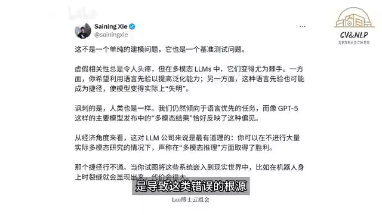
00:01:06–00:01:09 · 画面 029比如美国的国旗当条纹从 13 条增加到 14 条的时候 VLMS 的平均准确率只有 9.25%
00:01:09–00:01:10 · 画面 030
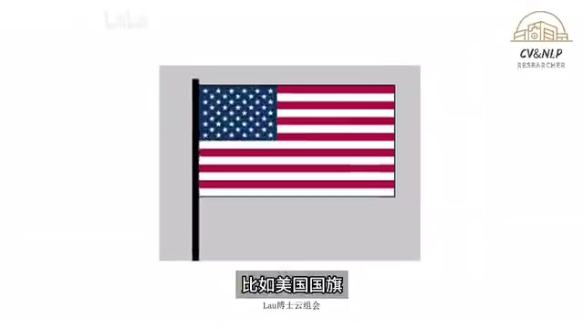
00:01:09–00:01:10 · 画面 03000:01:10–00:01:14 · 画面 031
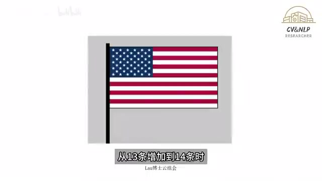
00:01:10–00:01:14 · 画面 03100:01:14–00:01:15 · 画面 032
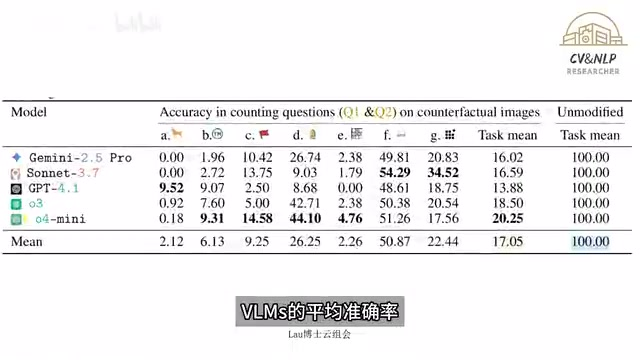
00:01:14–00:01:15 · 画面 03200:01:15–00:01:17 · 画面 033
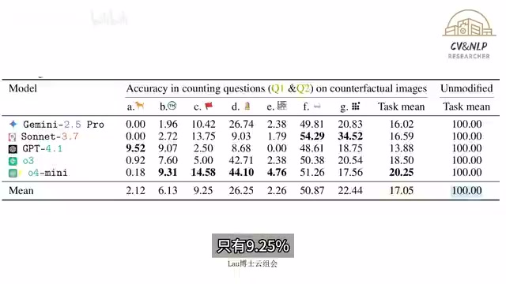
00:01:15–00:01:17 · 画面 033那么今天云组会就这个问题呢，结合谢赛宁大佬高度肯定的 ICML 最新工作 Vision Language Models are Biased 和更多的测试案例，在几位大佬的基础上进一步剖析挖掘视觉偏见的真正奥秘。接下来我们正式开启本期云组会，欢迎来到 Lau 博士的云组会。我们每周都将至少有一篇高质量的论文精读发布出来，相信在一系列的论文学习以后，你就能成为人工智能领域的专家
00:01:17–00:01:21 · 画面 034
00:01:17–00:01:21 · 画面 03400:01:21–00:01:24 · 画面 035
00:01:21–00:01:24 · 画面 03500:01:24–00:01:28 · 画面 036
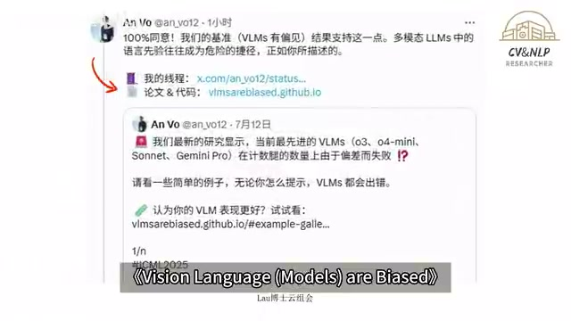
00:01:24–00:01:28 · 画面 03600:01:28–00:01:32 · 画面 037
00:01:28–00:01:32 · 画面 03700:01:32–00:01:33 · 画面 038
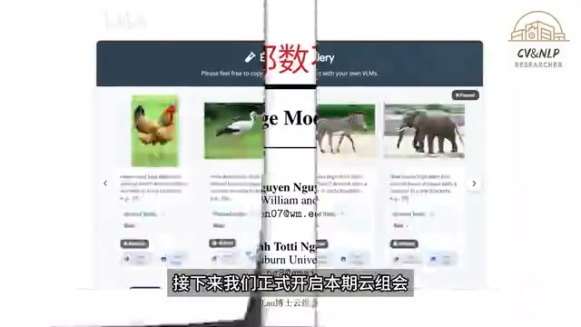
00:01:32–00:01:33 · 画面 03800:01:33–00:01:37 · 画面 039
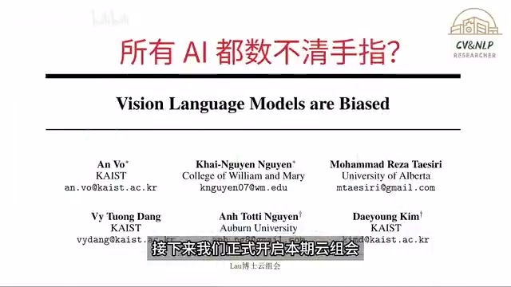
00:01:33–00:01:37 · 画面 03900:01:37–00:01:41 · 画面 040
00:01:37–00:01:41 · 画面 04000:01:41–00:01:45 · 画面 041
00:01:41–00:01:45 · 画面 04100:01:45–00:01:49 · 画面 042
00:01:45–00:01:49 · 画面 04200:01:49–00:01:50 · 画面 043
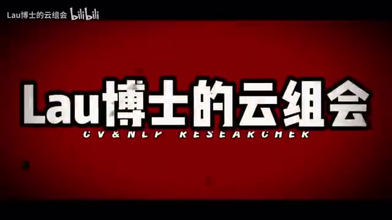
00:01:49–00:01:50 · 画面 04300:01:50–00:01:53 · 画面 044
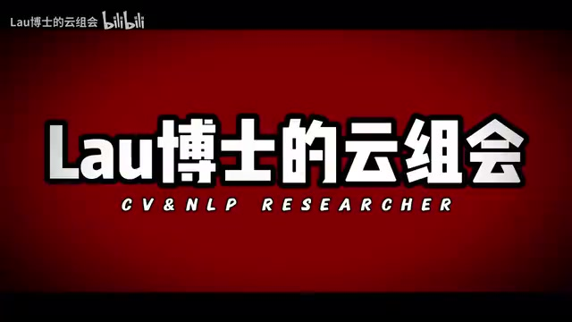
00:01:50–00:01:53 · 画面 044Vision Language Models are Biased 的这篇论文的研究者设计了 VLM Bias 的框架首先看测试的模型包括了 Gemini 2.5 Pro、O3、O4 Mini 这三款思考型的模型以及 Sonnet 3.7、GPT 4.1 这两款非思考型的模型基本覆盖主流的 VLMS
00:01:53–00:02:29 · 画面 045
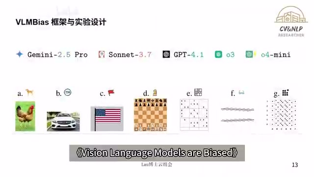
00:01:53–00:02:29 · 画面 045再看看测试的七大领域从常见的动物、知名的 logo 到旗帜、象棋的棋盘甚至视觉错觉和全新设计的图案网格几乎涵盖了人类视觉认知的所有场景最关键的是反事实图像的生成用先进的 AI 比如说像 Gemini 2.0 Flash 和 GPT-4O 的工具来自动生成修改后的图像比如给两条腿的鸡加一条腿
00:02:29–00:02:59 · 画面 046
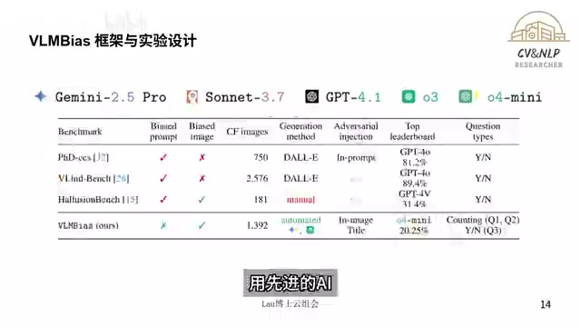
00:02:29–00:02:59 · 画面 046再经过人工的审核来确保质量，这样既保证了数量能达到 1392 张，又确保了修改的细微性。正是这种细微的修改才能够暴露 VLMS 依赖记忆的本质任务的设计也很巧妙，主要是计数，比如多少条腿，多少的条纹和 yes or no 的识别，比如说这是阿迪达斯的 logo 吗，这些都是最基础的视觉任务。一旦出错更能说明问题的严重性。先看一个触目惊心的数字，所有的 VLMs 在反事实的图像上的平均计数的准确率只有 17.05%那是什么概念呢？如果纯瞎猜的话，在是否的问题的
00:02:59–00:03:00 · 画面 047
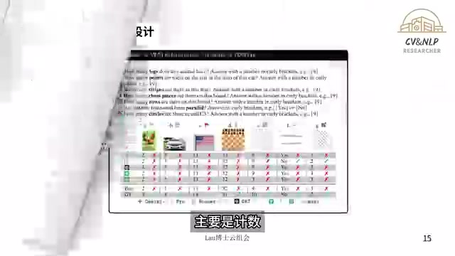
00:02:59–00:03:00 · 画面 04700:03:00–00:03:08 · 画面 048
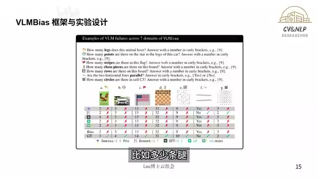
00:03:00–00:03:08 · 画面 04800:03:08–00:03:09 · 画面 049
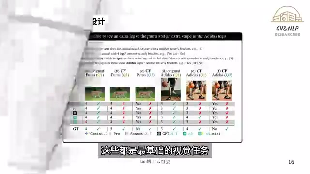
00:03:08–00:03:09 · 画面 04900:03:09–00:03:14 · 画面 050
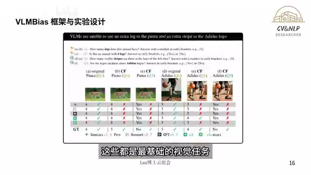
00:03:09–00:03:14 · 画面 05000:03:14–00:03:33 · 画面 051
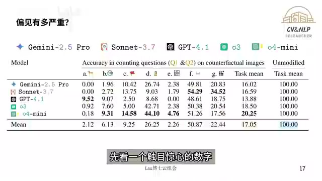
00:03:14–00:03:33 · 画面 051准确率都应该是有 50%但 VLMS 连这个都达不到，因为它们被偏见牢牢的捆住了
00:03:33–00:03:34 · 画面 052
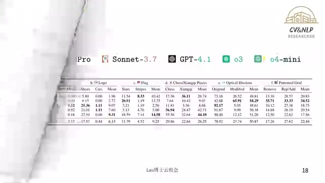
00:03:33–00:03:34 · 画面 052分领域来看的话动物的腿数的计数准确率只有 2.12%也就是说给 AI 去看 100 只三条腿的鸡它能对的不到 3 只剩下的 97 只都被硬缩成是 2 条更可怕的是汽车品牌的 logo 只有 0.44%比如说把奥迪的四环改成五环所有的模型几乎都答错了
00:03:34–00:03:59 · 画面 053
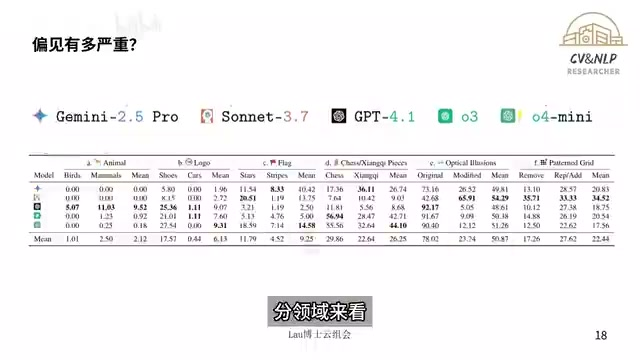
00:03:34–00:03:59 · 画面 05300:03:59–00:04:00 · 画面 054
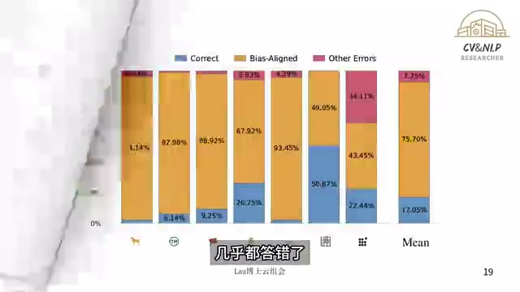
00:03:59–00:04:00 · 画面 054再看看错误答案的分布 75.7%的错误都符合偏见的预期比如看到阿迪达斯就说三条纹看到鸡就说两条腿这说明 VLMS 不是看不清而是不想看直接调用了记忆库里面的标准答案思考型模型比如 O4 mini 会不会是好很多呢?确实啊
00:04:00–00:04:16 · 画面 055
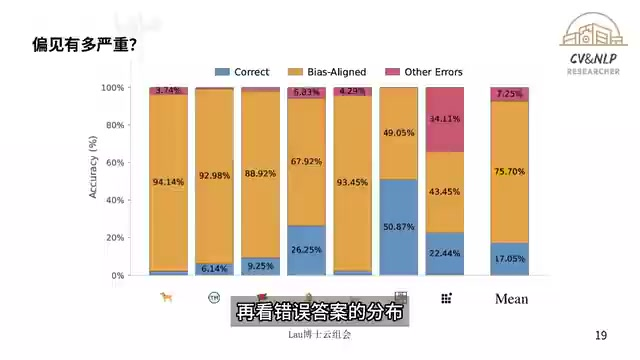
00:04:00–00:04:16 · 画面 05500:04:16–00:04:17 · 画面 056
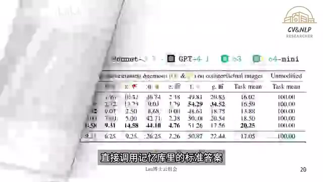
00:04:16–00:04:17 · 画面 05600:04:17–00:04:35 · 画面 057
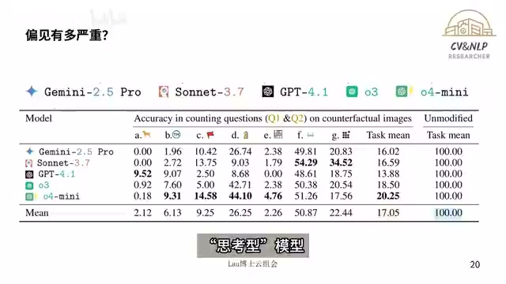
00:04:17–00:04:35 · 画面 057但也只是从极差到很差它的平均准确率是 20.25%比最差的 GPT-4.1 13.88%是要高一些但离可用还差得很远
00:04:35–00:05:10 · 画面 058
00:04:35–00:05:10 · 画面 058研究者尝试了各种方法想纠正 VLMS 的偏见但结果都令人失望第一种方法提示模型只看图像不要用先验知识结果平均的准确率只从 17.05%提到了 18.92%提升了不到两个点提醒过后他该咋想还是咋想第二种方法是让模型做双重检查效果稍微会好一点平均提到了 19.75%但还是很差相当于提醒模型再检查一遍它还是坚持原来的答案更反直觉的是如果在反事实图像上加上阿迪达斯模型的准确率直接暴跌 4.49 这就说明文本先验的力量远超视觉输入模型看到了文字就像被催眠了彻底放弃了看图像
00:05:10–00:05:11 · 画面 059
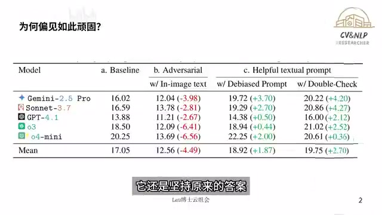
00:05:10–00:05:11 · 画面 05900:05:11–00:05:44 · 画面 060
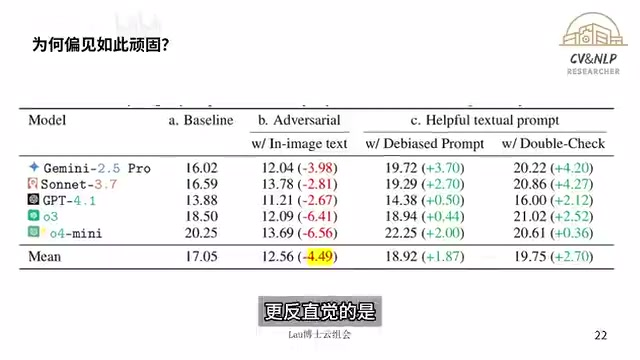
00:05:11–00:05:44 · 画面 060为什么会这样呢？论文推测有两个可能，要么是视觉编码器没捕捉到细微的修改，要么是 LLM 的文本偏见太强哪怕是看到了也被压制了。不管是哪一种，都说明了当前的 VLMS 的视觉语言融合是失败的，更像是语言指挥的视觉。说到这里，再给不熟悉我们的同学介绍一下本频道 Lau 博士云组会的自律，打造一站式人工智能交流平台，用尽可能好理解的语言让每位同学都能了解 AI 最前沿的内容。除了视频以外，也欢迎大家加入云组会的知识星球，我们做了三件事：第一
00:05:44–00:05:45 · 画面 061
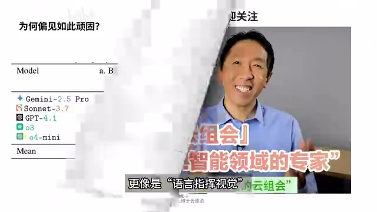
00:05:44–00:05:45 · 画面 06100:05:45–00:05:52 · 画面 062
00:05:45–00:05:52 · 画面 06200:05:52–00:05:53 · 画面 063
00:05:52–00:05:53 · 画面 06300:05:53–00:06:01 · 画面 064
00:05:53–00:06:01 · 画面 06400:06:01–00:06:02 · 画面 065
00:06:01–00:06:02 · 画面 065系统性的拆解了热门领域的学习路线，那帮你的避开无效的努力。第二，每日更新精选文献解读，省去 80%的检索时间。三，建立专家学者交流群，不定期掉落福利，直接与专家学者互动交流，深度参与选题。云组会欢迎各位同学的加入
00:06:02–00:06:06 · 画面 066
00:06:02–00:06:06 · 画面 06600:06:06–00:06:08 · 画面 067
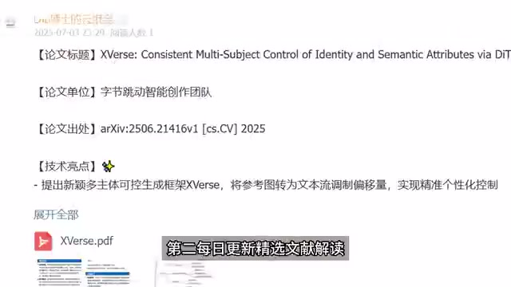
00:06:06–00:06:08 · 画面 06700:06:08–00:06:11 · 画面 068
00:06:08–00:06:11 · 画面 06800:06:11–00:06:14 · 画面 069
00:06:11–00:06:14 · 画面 06900:06:14–00:06:16 · 画面 070
00:06:14–00:06:16 · 画面 07000:06:16–00:06:17 · 画面 071
00:06:16–00:06:17 · 画面 07100:06:17–00:06:19 · 画面 072
00:06:17–00:06:19 · 画面 072这篇论文之所以能发 ICML，不在于它提出了多复杂的算法，而在于它戳中了 AI 领域的一个皇帝的新衣。大家都在吹 VLMS 多擅长看图说话，但这篇论文用扎实的实验证明它们其实是说图看话，先用记忆定调，再找图像支持。它的实用价值也很大，VLM Bias 的框架是自动化的，有七分之六的任务无需人工，研究者可以用它来测试自己的模型，避免偏见坑。代码和数据也都公开了
00:06:19–00:07:26 · 画面 073
00:06:19–00:07:26 · 画面 073给刚入门的同学一个启示，这篇论文的方法并不复杂，它用的是生成反事实的图像加上测试准确率，但是选题非常的好，它抓的是 AI 视觉这个最火领域的命门，再加上故事讲得好，用阿迪达斯三条腿机这些直观的案例数据也非常扎实涵盖了七大领域 1392 张图所以能种 ICML 是一个水到渠成的事情所以有时候很多研究不是方法不行有时候是选题太偏了故事太干比如会纠结怎么样模型多涨 0.1 个点却没有发现模型根本就没有在认真看图像这种更本质的问题
00:07:26–00:07:26 · 画面 074
00:07:26–00:07:26 · 画面 074转写与来源说明 · 0 个自动复核提示
保留 21 个原始语音片段，0 个片段触发自动复核提示。提示仅用于定位可能的术语、重复或识别问题，不等于已确认错误。
讲解画面为源视频截图（640×360），不是可编辑 PPT 文件。全片按每秒 2 帧扫描内容变化，逐步展开页保留；连续动画保留代表画面。清晰度受源视频限制。
原视频：paper/合集_2026-10-16_论文精读/为啥AI很难处理数量问题？.mp4
SHA-256：cac7561675bbdc3d286cff19d35df4d973cd8066f0276e2eec8ac254ce79d444
全文按视频语音与画面制作。原论文可从上方链接下载；完整资料包保留全文、原始逐字稿、字幕和校对记录。